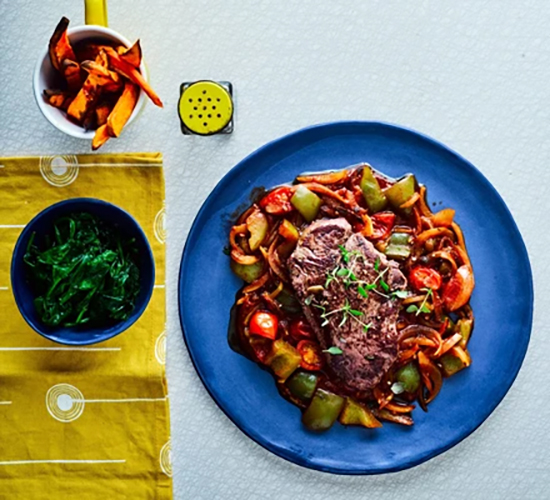

Steak Recipe

Enjoy fillet steak with sauce for a healthy dinner that also boasts sweet potato fries, spinach and cherry tomatoes.
You'll be getting all of your 5-a-day
Ingredients
- 3 tbsp rapeseed oil
- 250g sweet potatoes, peeled and cut into narrow chips
- 1 tbsp fresh thyme leaves
- 2 small onions, halved and sliced
- 1 green pepper
- 2 garlic cloves, sliced
- 1 tsp smoked paprika
- 85g cherry tomatoes, halved
- 1 tbsp tomato puree
- 1 tsp vegetable bouillon powder
- 2x 125g fillet steaks
- 200g bag baby spinach
Method
Step 1
- Heat oven to 240C/220C fan/gas 7 and put a wire rack on top of a baking tray. Toss the sweet potatoes and thyme with
2 tsp oil in a bowl, then scatter them over the rack and set aside until ready to cook.
Step 2
- Heat 1 tsp oil in a non-stick pan, add the onions, cover the pan and leave to cook for 5 mins. Take off the lid and
stir, they should be a little charred now. Stir in the green pepper and garlic, cover the pan and cook for 5 mins more.
Put the potatoes in the oven and bake for 15 mins.
Step 3
- While the potatoes are cooking, stir the paprika into the onions and peppers, pour in 150ml water and stir in the cherry
tomatoes, tomato purée and bouillon. Cover and simmer for 10 mins.
Step 4
- Pan-fry the steak in a hot, non-stick pan for 2-3 mins each side depending on their thickness. Rest for 5 mins.
Spoon the goulash sauce onto plates and top with the beef. Serve the chips and spinach alongside.
Return to main page.
OR...
Check out our pasta recipe, it will open
in another tab for your convenience!
Check out our chili recipe, it will open
in another tab for your convenience!